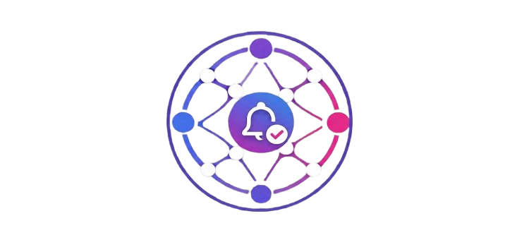

| Título del proyecto | Alivia — Plataforma digital de gestión unificada de recordatorios para la vida adulta |
|---|---|
| Integrantes y roles |
Completar antes de entregar
|
| Sector económico | Terciario — Servicios. Subsector Tecnologías de la Información y las Comunicaciones (TIC). CIIU 6201 «Actividades de desarrollo de sistemas informáticos» y 6311 «Procesamiento de datos y alojamiento». |
| Tipo de proyecto | Tecnológico (desarrollo de producto de software SaaS), con componente social: reducción de la carga mental y del incumplimiento de obligaciones en población adulta. |
| Modelo de negocio | Freemium. Módulos gratuitos: Hogar, Vehículo y Familia. Módulos premium: Salud, Finanzas, Mascotas y General. |
| Descripción breve | Alivia es una plataforma web y móvil que centraliza en un solo lugar los recordatorios de las siete áreas de responsabilidad de un adulto — hogar, vehículo, salud, finanzas, familia, mascotas y general — con vencimientos recurrentes precargados por plantilla (SOAT, tecnomecánica, impuesto predial, controles médicos, vacunas de mascotas) y notificaciones automáticas priorizadas. A diferencia de los gestores de tareas genéricos, el usuario no tiene que saber qué debe recordar ni cuándo: la aplicación ya lo sabe por él. |
La gestión personal de obligaciones pasó de soportes físicos a soportes digitales en tres olas sucesivas. La primera fue la agenda de papel y el calendario de pared, con dos limitaciones estructurales: no avisa por sí sola y no se sincroniza entre personas. La segunda, iniciada a finales de los años noventa, trasladó la agenda al dispositivo (PDA, luego calendario del correo electrónico) e incorporó la alarma, pero mantuvo la carga de la entrada manual: alguien debía saber qué anotar. La tercera, desde 2007 con la masificación del teléfono inteligente, produjo la categoría de aplicaciones de gestión de tareas — Remember the Milk, Wunderlist, Todoist, Any.do — que agregó sincronización en la nube, colaboración y recurrencia.
Las tres olas comparten un supuesto que sigue sin resolverse: el sistema es un contenedor vacío que el usuario debe llenar. Ninguna sabe que en Colombia el SOAT vence cada año, que la revisión tecnomecánica se exige desde el segundo año del vehículo particular, o que un perro requiere refuerzo antirrábico anual. Ese vacío entre «herramienta genérica» y «obligación concreta del adulto colombiano» es el espacio donde se ubica este proyecto.
El mercado mundial de aplicaciones de productividad se valoró en USD 13.150 millones en 2025 y se proyecta en USD 30.850 millones para 2034, con una tasa de crecimiento anual compuesta del 9,94% (Fortune Business Insights, 2025). El segmento más cercano al proyecto, el de software de gestión de tareas, es más pequeño pero crece más rápido: USD 3.940 millones en 2025 con proyección a USD 12.340 millones en 2033 y una TCAC del 15,6% (Grand View Research, 2026). La diferencia entre ambas tasas es informativa: el nicho de gestión de tareas se expande a casi el doble del ritmo de la categoría que lo contiene, lo que indica que la demanda se está desplazando desde suites ofimáticas generales hacia herramientas especializadas.
Tres tendencias dominan la oferta actual: la incorporación de inteligencia artificial para priorización y captura en lenguaje natural, la convergencia entre calendario y lista de tareas en una sola vista, y el desplazamiento del cobro por licencia hacia la suscripción recurrente con capa gratuita de captación.
La condición de posibilidad del proyecto es la conectividad, y en Colombia esa condición está dada pero no es universal. Según la Encuesta de Calidad de Vida 2025, el 73,9% de los hogares colombianos tenía acceso a internet (DANE, 2025); el MinTIC reporta cerca de 49,75 millones de accesos a internet móvil (MinTIC, 2025). La lectura correcta de esas dos cifras es doble. Por un lado hay un mercado direccionable amplio y mayoritariamente móvil. Por otro, uno de cada cuatro hogares sigue sin acceso fijo, lo que obliga a un diseño que funcione con conectividad intermitente y bajo consumo de datos, y desaconseja cualquier funcionalidad que dependa de conexión permanente.
Sobre la demanda del lado del problema, la Encuesta Nacional de Salud Mental 2025 del Ministerio de Salud, aplicada a más de 120.000 personas en los 32 departamentos, encontró una prevalencia de trastornos mentales a lo largo de la vida en adultos del 8,4% (5,7% en hombres y 10,8% en mujeres), y registró que la depresión del último mes prácticamente se triplicó y la ansiedad generalizada se cuadruplicó frente a la medición de 2015 (Minsalud, 2025). La encuesta identifica además que, en adultos, la falta de estabilidad económica es la principal fuente de estrés agudo, por encima de la presión laboral o los problemas de pareja. En el ámbito del trabajo, un estudio de Seguros Sura estimó que cerca del 34% de los trabajadores se ausenta por condiciones de salud mental (Seguros Sura, 2025).
| Innovación | En qué consiste | Estado en el mercado | Relevancia para Alivia |
|---|---|---|---|
| Captura en lenguaje natural | Escribir «cambio de aceite en 6 meses» y que el sistema cree la tarea con su fecha | Consolidada (Todoist, TickTick) | Media — reduce fricción, pero no elimina el problema de fondo: el usuario debe saber qué anotar |
| Priorización asistida por IA | Ordenamiento automático según urgencia, impacto e historial | Emergente | Alta — es el diferenciador declarado del proyecto |
| Plantillas de obligaciones por dominio | Catálogos precargados de vencimientos típicos por área de vida | Incipiente y fragmentada | Muy alta — es el vacío competitivo real y el núcleo de la propuesta |
| Notificación multicanal con control de frecuencia | Alertas por aplicación, correo y mensajería, con límites de contacto | Consolidada, en endurecimiento regulatorio | Alta — debe diseñarse conforme a la Ley 2300 de 2023 |
| Backend como servicio (BaaS) | Infraestructura gestionada tipo Supabase o Firebase | Consolidada | Alta — reduce inversión inicial y tiempo de salida al mercado |
| Norma | Objeto | Implicación para el proyecto |
|---|---|---|
| Ley 1581 de 2012 y Decreto 1074 de 2015 | Régimen general de protección de datos personales | Obliga a política de tratamiento, autorización previa e informada del titular y registro de las bases de datos ante la SIC |
| Ley 1266 de 2008 | Habeas data | Aplica a los datos del módulo de finanzas; limita el uso y la circulación de información financiera |
| Ley 1480 de 2011 | Estatuto del Consumidor | Rige la información de precios, la reversión del pago y el derecho de retracto en la venta de suscripciones |
| Ley 527 de 1999 | Comercio electrónico y mensajes de datos | Da validez jurídica a la contratación en línea de la suscripción premium |
| Ley 2300 de 2023 | Protección frente al contacto no consentido | Restringe horarios y frecuencia de contacto; el módulo de notificaciones debe ser configurable por el usuario |
| Ley 1258 de 2008 | Sociedad por Acciones Simplificada | Define la figura societaria propuesta para la formalización (ver sección 9) |
| Datos sensibles de salud | Art. 5 y 6, Ley 1581 de 2012 | El módulo de salud maneja categoría especial: exige autorización explícita y refuerzo de seguridad |
Efectos arriba, problema central en el medio, causas abajo. La versión ampliada e interactiva de este diagrama y del árbol de objetivos se encuentra en el documento anexo arbol.html.
Diagrama espejo del anterior: cada causa se convierte en un medio y cada efecto en un fin.
Porque el costo del olvido en Colombia es medible y alto, y porque las herramientas disponibles no lo atacan. Un adulto colombiano promedio administra simultáneamente obligaciones vehiculares con vencimiento legal (SOAT, tecnomecánica, pico y placa), tributarias (predial, vehicular, renta), de salud (controles, exámenes periódicos, vacunación), del hogar (servicios, mantenimientos) y familiares. Ninguna aplicación existente en el mercado le entrega ese calendario ya construido: todas esperan que él lo construya, lo que reproduce exactamente la carga cognitiva que se pretendía eliminar.
Para que el usuario deje de sostener sus obligaciones en la memoria y las delegue en un sistema que las conoce por adelantado. El fin último no es «organizar tareas» sino reducir la carga mental y el costo económico asociados al incumplimiento involuntario.
Mediante el desarrollo de una plataforma web y móvil con arquitectura cliente-servidor, backend en Node.js y Express, base de datos PostgreSQL gestionada sobre Supabase, autenticación por token JWT y un servicio programado de notificaciones. La ejecución sigue el cronograma de la sección 11, con validación de mercado previa al desarrollo y cumplimiento normativo de datos personales incorporado desde el diseño.
El proyecto es técnicamente viable con tecnologías maduras, gratuitas o de bajo costo en su nivel de entrada, y con un equipo de estudiantes de ingeniería. La arquitectura propuesta no requiere componentes de investigación: es integración de piezas probadas. La complejidad real no está en construir el software sino en curar el contenido de las plantillas, que exige verificar la normatividad y los ciclos reales de cada obligación.
El proyecto interviene sobre un determinante de la carga mental en población económicamente activa, en un contexto donde la prevalencia de ansiedad se cuadruplicó respecto de 2015 (Minsalud, 2025). Al mantener gratuitos los módulos de hogar, vehículo y familia, el beneficio de mayor impacto económico — evitar multas de tránsito — queda accesible sin pago, lo que evita que la herramienta sirva solo a quien ya puede pagarla.
Para el usuario, la relación costo-beneficio es asimétrica a su favor: evitar un solo comparendo por SOAT vencido ($1.750.890) equivale a varios años de suscripción premium. Para el proyecto, el modelo de suscripción recurrente genera ingresos predecibles y el costo marginal por usuario adicional es cercano a cero, propio del software como servicio.
El impacto ambiental directo es bajo y de signo mixto. Positivo: sustituye soportes físicos y reduce desplazamientos por trámites vencidos o mal programados. Negativo: consume energía de centros de datos. La medida de mitigación es contratar infraestructura con compromiso de energía renovable y optimizar la frecuencia de las consultas programadas (ver sección 10).
| # | Objetivo específico | Indicador de cumplimiento | Meta o entregable |
|---|---|---|---|
| 1 | Determinar, mediante investigación de campo, las obligaciones recurrentes más olvidadas por adultos de 25 a 55 años residentes en Colombia. | Número de encuestas válidas aplicadas y de obligaciones priorizadas | 200 encuestas válidas y 10 entrevistas; listado priorizado de al menos 40 obligaciones recurrentes |
| 2 | Diseñar la arquitectura técnica y el modelo de datos de la plataforma, cubriendo los siete módulos y el esquema de recurrencia de recordatorios. | Modelo entidad-relación aprobado y documentado | Diagrama E-R y guion de base de datos desplegado en ambiente de pruebas |
| 3 | Implementar una versión funcional (MVP) de la plataforma web y móvil con los siete módulos, autenticación de usuarios y creación de recordatorios por plantilla. | Porcentaje de requisitos funcionales implementados y aprobados en pruebas | ≥ 90% de los requisitos priorizados, con 7 módulos operativos y ≥ 40 plantillas cargadas |
| 4 | Implementar el servicio automático de notificaciones programadas conforme a los límites de contacto de la Ley 2300 de 2023. | Tasa de entrega efectiva de notificaciones programadas en pruebas | ≥ 95% de notificaciones entregadas en la ventana prevista, con frecuencia configurable por el usuario |
| 5 | Establecer el cumplimiento normativo en materia de protección de datos personales exigido para operar en Colombia. | Trámites completados ante la Superintendencia de Industria y Comercio | Política de tratamiento publicada, flujo de autorización implementado y bases de datos registradas en el RNBD |
| 6 | Evaluar la aceptación de la plataforma mediante una prueba piloto con usuarios reales, midiendo retención y reducción del incumplimiento percibido. | Usuarios activos en el piloto, retención a 30 días y variación del incumplimiento autorreportado | 50 usuarios en piloto, retención ≥ 40% a 30 días y reducción ≥ 25% del incumplimiento autorreportado |
| 7 | Definir la estructura de precios localizada para el mercado colombiano a partir del análisis de disposición a pagar obtenido en campo. | Precio premium definido en pesos colombianos y sustentado | Documento de política de precios con punto de equilibrio y comparación frente a competidores |
| Factor | Situación actual en Colombia | Impacto sobre el proyecto |
|---|---|---|
| Político | Política pública de transformación digital sostenida a través del MinTIC, con programas de conectividad y de apoyo a la industria del software. Al mismo tiempo, la volatilidad regulatoria y los ciclos electorales generan incertidumbre sobre la continuidad de los incentivos al emprendimiento digital. | Oportunidad El impulso estatal a la digitalización favorece la adopción de soluciones locales. Amenaza La discontinuidad de programas de apoyo puede eliminar fuentes de financiación previstas. |
| Económico | Salario mínimo mensual de $1.750.905 para 2026, con un salario diario cercano a $58.363 (La FM, 2026). La Encuesta Nacional de Salud Mental identifica la inestabilidad económica como la principal fuente de estrés agudo en adultos (Minsalud, 2025), lo que revela un consumidor sensible al precio en gastos discrecionales. | Amenaza Crítico. El precio premium actual de USD 9,99 mensuales equivale a cerca de $40.000, más del doble de Todoist Pro (USD 5). En un consumidor sensible al precio, ese nivel bloquea la conversión. Oportunidad El alto valor de las multas evitadas permite argumentar retorno económico directo, no solo comodidad. |
| Social | Prevalencia de trastornos mentales a lo largo de la vida en adultos del 8,4%; la depresión del último mes se triplicó y la ansiedad generalizada se cuadruplicó frente a 2015 (Minsalud, 2025). Cerca del 34% de los trabajadores se ausenta por condiciones de salud mental (Seguros Sura, 2025). Cultura familiar extensa que multiplica los compromisos por persona. | Oportunidad El problema que atiende el proyecto está documentado oficialmente y en aumento, lo que respalda la pertinencia social. Amenaza Una parte del público puede percibir la herramienta como una fuente adicional de presión si las notificaciones no se calibran. |
| Tecnológico | 73,9% de hogares con acceso a internet (DANE, 2025) y cerca de 49,75 millones de accesos móviles (MinTIC, 2025). Madurez de las plataformas de backend como servicio, que reducen la inversión inicial. Aceleración de la IA aplicada a productividad. | Oportunidad Base de usuarios conectada y mayoritariamente móvil; infraestructura de bajo costo de entrada. Amenaza Uno de cada cuatro hogares sin acceso fijo obliga a diseñar para conectividad intermitente; la dependencia de un único proveedor de backend concentra riesgo. |
| Ambiental | Presión creciente sobre el consumo energético de los centros de datos y expectativa social de reporte ambiental. Riesgo de interrupción del servicio por eventos climáticos que afecten la infraestructura o la conectividad regional. | Oportunidad La desmaterialización de agendas y la reducción de desplazamientos por trámites son argumentos de sostenibilidad verificables. Amenaza Impacto reputacional si el proveedor de nube no acredita energía renovable. |
| Legal | Régimen de protección de datos personales de la Ley 1581 de 2012 y el Decreto 1074 de 2015, con registro obligatorio ante la SIC. Ley 2300 de 2023 sobre contacto no consentido. Estatuto del Consumidor (Ley 1480 de 2011) aplicable a la suscripción. Los datos de salud son de categoría especial. | Amenaza Crítico. El incumplimiento expone a sanciones de la SIC y compromete la viabilidad. El módulo de salud eleva el estándar exigible. Oportunidad El cumplimiento riguroso y visible es un diferenciador de confianza frente a aplicaciones extranjeras que no responden ante la autoridad colombiana. |
| Competidor | Precio (2026) | Calidad | Tecnología | Cobertura | Posicionamiento |
|---|---|---|---|---|---|
| Todoist Directo |
Gratis con 5 proyectos; Pro USD 5/mes anual (alfred_, 2026) | Alta: producto maduro y estable | Multiplataforma, lenguaje natural, API abierta | Global, interfaz en español | Estándar de facto en productividad personal |
| TickTick Directo |
Premium USD 35,99/año o USD 3,99/mes (AIToolPick, 2026) | Alta: incluye calendario y hábitos en el plan base | Multiplataforma con Pomodoro y vista de calendario | Global | Alternativa de mejor relación precio-valor |
| Any.do Directo |
Freemium con plan premium por suscripción | Media-alta: fuerte en diseño móvil | Multiplataforma con asistente y listas familiares | Global | Enfoque en simplicidad y uso familiar |
| Google Calendar / Keep Indirecto |
Gratuito | Alta en fiabilidad, baja en gestión de obligaciones | Integrado al ecosistema Google | Universal, preinstalado en Android | Opción por defecto, sin costo ni fricción |
| Notion Indirecto |
Freemium; planes pagos por usuario | Alta en flexibilidad, exige configuración | Espacio de trabajo modular con plantillas de comunidad | Global | Herramienta para usuarios avanzados |
| Alivia Proyecto |
Freemium: 3 módulos gratis; premium por definir en COP | Por validar en el piloto | React + React Native, Node.js, PostgreSQL sobre Supabase | Colombia | Obligaciones recurrentes del adulto colombiano, precargadas |
Al tratarse de un proyecto de software, los insumos críticos no son materias primas sino servicios de infraestructura, plataformas de distribución y servicios profesionales. Se evalúan al menos dos alternativas por insumo crítico para evitar la dependencia de una sola fuente.
| Proveedor | Precio | Calidad | Disponibilidad | Ubicación | Condiciones de pago | Capacidad de entrega |
|---|---|---|---|---|---|---|
| Supabase Seleccionado | Nivel gratuito suficiente para el piloto; plan Pro desde USD 25/mes | Alta: PostgreSQL gestionado, autenticación y API automática | Alta, con acuerdo de nivel de servicio en planes pagos | Regiones en EE. UU. y Suramérica (São Paulo) | Tarjeta internacional, mensual | Aprovisionamiento inmediato |
| Firebase Alternativa | Nivel gratuito; luego cobro por consumo | Alta, pero base de datos no relacional | Muy alta | Global | Tarjeta internacional, por consumo | Inmediato |
| Neon / Railway Alternativa | Nivel gratuito limitado; desde USD 5–19/mes | Alta: PostgreSQL estándar | Media-alta | Global | Tarjeta, mensual | Inmediato |
Criterio de selección: se elige Supabase por usar PostgreSQL estándar, lo que permite migrar a Neon, Railway o a un servidor propio sin reescribir el modelo de datos. Firebase se descarta pese a su madurez porque su modelo no relacional generaría una dependencia difícil de revertir.
| Proveedor | Precio | Calidad | Disponibilidad | Ubicación | Condiciones de pago | Capacidad de entrega |
|---|---|---|---|---|---|---|
| Vercel Seleccionado (web) | Nivel gratuito para proyectos personales; Pro USD 20/mes | Alta: red de distribución global y despliegue continuo desde el repositorio | Alta | Global | Tarjeta, mensual | Despliegue en minutos |
| Railway Seleccionado (backend) | Desde USD 5/mes por consumo | Alta para servicios Node.js persistentes | Alta | Global | Tarjeta, por consumo | Inmediato |
| Render Alternativa | Nivel gratuito con suspensión por inactividad; desde USD 7/mes | Media-alta | Media en el nivel gratuito | Global | Tarjeta, mensual | Inmediato |
Observación técnica: el servicio de notificaciones programadas exige un proceso permanente. Los niveles gratuitos que suspenden la aplicación por inactividad, como el de Render, no sirven para esta función, lo que restringe la elección con independencia del precio.
| Proveedor | Precio | Calidad | Disponibilidad | Condiciones | Cumplimiento normativo |
|---|---|---|---|---|---|
| Resend Seleccionado | 3.000 correos/mes gratis; desde USD 20/mes | Alta entregabilidad, API sencilla | Alta | Tarjeta, mensual | Permite baja de suscripción y registro de envíos, exigidos por la Ley 2300 de 2023 |
| SendGrid Alternativa | Nivel gratuito de 100 correos/día | Alta, producto maduro | Muy alta | Tarjeta, mensual | Cumple estándares de consentimiento |
| Insumo | Proveedor | Costo aproximado | Disponibilidad | Observación |
|---|---|---|---|---|
| Asesoría jurídica en protección de datos | Consultorio jurídico universitario / firma local | $0 (universitario) a $1.500.000 | Media | Se privilegia el consultorio jurídico de la universidad para el alcance académico |
| Registro de marca | Superintendencia de Industria y Comercio | Tarifa oficial vigente por clase | Alta | Queda fuera del alcance de esta fase; se documenta para la Entrega 2 |
| Constitución de la sociedad | Cámara de Comercio | Inscripción de documento privado: 6 UVB ≈ $72.660 (2026) (SNLegal, 2026) | Alta | Ver sección 9 |
Se propone constituir una Sociedad por Acciones Simplificada (S.A.S.) al amparo de la Ley 1258 de 2008. La elección responde a tres razones concretas: puede constituirse por documento privado sin escritura pública, lo que reduce costo y tiempo frente a otras figuras; admite uno o varios accionistas y permite repartir la participación entre los integrantes del equipo con reglas propias en los estatutos; y limita la responsabilidad de los socios al monto de sus aportes, lo cual es determinante en un proyecto que tratará datos personales de categoría especial y que, por tanto, está expuesto a sanciones administrativas. Una figura de persona natural comerciante sería más barata pero dejaría el patrimonio personal de los integrantes respondiendo por ese riesgo.
| Trámite o registro | Entidad responsable | Tiempo estimado | Costo aproximado (2026) |
|---|---|---|---|
| Verificación de homonimia del nombre | RUES — Cámara de Comercio | Inmediato | Sin costo |
| Constitución por documento privado e inscripción | Cámara de Comercio | 1 a 3 días hábiles | 6 UVB ≈ $72.660 (SNLegal, 2026) |
| Matrícula mercantil y derechos de registro | Cámara de Comercio | 1 a 3 días hábiles | Entre $200.000 y $1.500.000 según capital y activos declarados (Buk, 2026) |
| Impuesto de registro | Gobernación / Cámara de Comercio | Simultáneo | Porcentaje del capital suscrito |
| Inscripción en el RUT y asignación de NIT | DIAN | 1 día hábil | Sin costo (DIAN, 2026) |
| Habilitación de facturación electrónica | DIAN | 3 a 5 días hábiles | Sin costo (proveedor tecnológico opcional) |
| Política de tratamiento de datos personales | Elaboración interna — Ley 1581 de 2012 | 5 días hábiles | Costo de asesoría |
| Registro de bases de datos en el RNBD | Superintendencia de Industria y Comercio | 1 a 2 días hábiles | Sin costo |
| Términos y condiciones del servicio | Elaboración interna — Ley 1480 de 2011 | 3 días hábiles | Costo de asesoría |
| Registro de marca (clase 9 y 42) | Superintendencia de Industria y Comercio | 6 a 8 meses | Tarifa oficial vigente por clase |
| Afiliación al sistema de seguridad social | EPS, ARL y fondo de pensiones | 3 a 5 días hábiles | Según nómina; no aplica en fase académica |
Alivia es un proyecto de servicios, por lo que la ingeniería se centra en el flujo de prestación, los puntos de contacto con el cliente y los recursos humanos y tecnológicos requeridos. El detalle de capacidad instalada, arquitectura de despliegue y localización se desarrollará en la ingeniería detallada de la Entrega 2.
| Ítem | Función | Cantidad estimada | Proveedor de referencia |
|---|---|---|---|
| Equipos de cómputo de desarrollo | Programación, diseño y pruebas | 4 (propios del equipo) | Recursos propios |
| Dispositivos móviles de prueba | Validación en Android e iOS | 2 | Recursos propios |
| Base de datos PostgreSQL gestionada | Persistencia de usuarios, módulos y recordatorios | 1 instancia | Supabase |
| Alojamiento del backend | Ejecución de la API y del proceso programado de notificaciones | 1 servicio | Railway |
| Alojamiento de la aplicación web | Distribución del frontend | 1 proyecto | Vercel |
| Servicio de correo transaccional | Envío de notificaciones | Hasta 3.000 correos/mes | Resend |
| Repositorio y control de versiones | Gestión del código y despliegue continuo | 1 repositorio | GitHub |
| Herramienta de diseño de interfaz | Prototipado y validación | 1 licencia educativa | Figma |
| Software de gestión de proyectos | Gantt, PERT y ruta crítica | 1 licencia | MS Project / GanttProject |
| Dominio y certificado TLS | Identidad y cifrado en tránsito | 1 dominio .co | Registrador local; TLS incluido en Vercel |
| Pasarela de pagos (modo pruebas) | Simulación del cobro premium | 1 integración | Wompi / Mercado Pago |
| Catálogo curado de obligaciones | Insumo de contenido: el diferenciador del producto | ≥ 40 plantillas verificadas | Elaboración propia con fuente normativa |
| Impacto identificado | Signo | Medida concreta de mitigación o potenciación |
|---|---|---|
| Consumo energético de los centros de datos que alojan la plataforma | Negativo | Seleccionar regiones del proveedor con compromiso de energía renovable y consolidar la evaluación de vencimientos en una única ejecución diaria en lugar de consultas continuas |
| Consumo energético en los dispositivos de los usuarios por notificaciones | Negativo | Agrupar notificaciones en un envío diario configurable en vez de alertas individuales, lo que además responde a la Ley 2300 de 2023 |
| Huella de los equipos de desarrollo | Negativo | Usar los equipos existentes del equipo sin adquisición de hardware nuevo |
| Residuos electrónicos | Negativo | No se adquiere hardware dedicado; al final de la vida útil, disposición mediante gestores autorizados |
| Sustitución de agendas y soportes físicos en papel | Positivo | Potenciar mediante un panel que permita consultar el historial sin necesidad de imprimir |
| Reducción de desplazamientos por trámites vencidos o mal programados | Positivo | Potenciar agrupando en la notificación los trámites que pueden resolverse en un mismo desplazamiento |
El cronograma se elabora en software especializado a partir del archivo cronograma-alivia.csv, que acompaña este documento y se importa directamente a MS Project o GanttProject para generar el diagrama de Gantt y la red PERT. Las precedencias son de tipo fin-inicio. Las holguras y la ruta crítica que se presentan a continuación se obtuvieron aplicando el método de la ruta crítica (CPM) sobre la red de precedencias, con pasada hacia adelante y hacia atrás.
| # | Actividad | Duración | Predecesoras | Responsable | Holgura | Crítica |
|---|---|---|---|---|---|---|
| Fase 1 — Formulación del proyecto | ||||||
| 1 | Conformación del equipo y definición de roles | 2 d | — | Director de proyecto | 0 d | Sí |
| 2 | Identificación y validación de la idea de proyecto | 3 d | 1 | Equipo completo | 0 d | Sí |
| 3 | Investigación de estado del arte y fuentes sectoriales | 8 d | 2 | Analista de mercado | 0 d | Sí |
| 4 | Construcción del árbol de problemas y de objetivos | 4 d | 2 | Director de proyecto | 6 d | No |
| 5 | Formulación de objetivos y alcance del proyecto | 3 d | 4 | Director de proyecto | 6 d | No |
| 6 | Análisis PESTEL del entorno colombiano | 5 d | 3 | Analista de mercado | 1 d | No |
| 7 | Análisis de competencia y benchmarking de precios | 5 d | 3 | Analista de mercado | 0 d | Sí |
| 8 | Análisis de proveedores y cotización de servicios cloud | 4 d | 3 | Líder técnico | 6 d | No |
| 9 | Estudio administrativo y legal preliminar | 4 d | 6 | Analista legal | 1 d | No |
| 10 | Ingeniería preliminar del proyecto | 5 d | 5, 7 | Líder técnico | 0 d | Sí |
| 11 | Consolidación y entrega del perfil (Entrega 1) | 3 d | 8, 9, 10 | Equipo completo | 0 d | Sí |
| Fase 2 — Investigación de mercado | ||||||
| 12 | Diseño del instrumento de encuesta | 3 d | 11 | Analista de mercado | 0 d | Sí |
| 13 | Aplicación de encuesta a 200 adultos de 25 a 55 años | 10 d | 12 | Analista de mercado | 0 d | Sí |
| 14 | Entrevistas a profundidad con 10 usuarios potenciales | 6 d | 12 | Diseñador UX | 4 d | No |
| 15 | Procesamiento y análisis de resultados de campo | 5 d | 13, 14 | Analista de mercado | 0 d | Sí |
| 16 | Definición de propuesta de valor y pricing localizado | 4 d | 15 | Director de proyecto | 0 d | Sí |
| Fase 3 — Diseño y desarrollo | ||||||
| 17 | Diseño UX/UI y prototipo navegable | 8 d | 16 | Diseñador UX | 8 d | No |
| 18 | Validación del prototipo con usuarios | 4 d | 17 | Diseñador UX | 8 d | No |
| 19 | Modelado de base de datos y esquema en Supabase | 5 d | 16 | Líder técnico | 0 d | Sí |
| 20 | Desarrollo del backend y API REST | 15 d | 19 | Desarrollador backend | 0 d | Sí |
| 21 | Desarrollo del frontend web | 15 d | 18, 20 | Desarrollador frontend | 0 d | Sí |
| 22 | Desarrollo de la aplicación móvil | 12 d | 20 | Desarrollador móvil | 9 d | No |
| 23 | Implementación del módulo de notificaciones programadas | 6 d | 20 | Desarrollador backend | 15 d | No |
| 24 | Integración de la pasarela de pagos | 6 d | 21 | Desarrollador backend | 0 d | Sí |
| Fase 4 — Pruebas y cumplimiento | ||||||
| 25 | Pruebas funcionales y de integración | 8 d | 21, 22, 23, 24 | Líder técnico | 0 d | Sí |
| 26 | Políticas de tratamiento de datos y registro RNBD ante la SIC | 6 d | 24 | Analista legal | 2 d | No |
| 27 | Prueba piloto (beta) con usuarios reales | 10 d | 25, 26 | Equipo completo | 0 d | Sí |
| Fase 5 — Cierre | ||||||
| 28 | Evaluación financiera y consolidación de la Entrega 2 | 7 d | 27 | Director de proyecto | 0 d | Sí |
El proyecto es técnicamente viable y se recomienda su continuidad hacia la Entrega 2. Ningún componente exige investigación ni desarrollo de tecnología nueva: la plataforma se construye integrando piezas maduras — React y React Native, Node.js con Express, PostgreSQL gestionado sobre Supabase, autenticación por token y un proceso programado de notificaciones — todas con documentación abundante, nivel gratuito de entrada y curva de aprendizaje compatible con un equipo de estudiantes de ingeniería. El cronograma de 114 días hábiles es holgado para un producto mínimo viable de este tamaño y cuenta con margen en las rutas no críticas.
La dificultad real del proyecto no es técnica sino de contenido. El diferenciador no es el motor de recordatorios, que cualquier competidor ya tiene resuelto, sino el catálogo curado de obligaciones recurrentes colombianas: verificar ciclos, respaldarlos normativamente y mantenerlos actualizados cuando la regulación cambie. Esa labor es manual, no se automatiza y no termina con la entrega. Tratarla como un detalle de datos sería el error de juicio más costoso de este proyecto.
| # | Riesgo | Probabilidad | Impacto | Nivel | Medida de mitigación |
|---|---|---|---|---|---|
| 1 | Fuga o tratamiento indebido de datos personales, en especial del módulo de salud | Baja | Muy alto | Crítico | Cifrado en tránsito y en reposo; autorización explícita y separada para datos de salud; registro en el RNBD antes del piloto (actividad 26); política de tratamiento publicada; posibilidad de usar la plataforma sin activar el módulo de salud |
| 2 | Precio premium no competitivo para el consumidor colombiano | Alta | Alto | Alto | Fijar el precio en pesos con base en la disposición a pagar medida en campo (actividad 16), por debajo de Todoist Pro; mantener gratuitos los módulos de mayor impacto económico |
| 3 | Un competidor consolidado incorpora plantillas locales y anula el diferenciador | Media | Alto | Alto | Ampliar y profundizar el catálogo más allá de lo que un actor global replicaría con bajo esfuerzo; construir marca local y buscar alianzas con entidades de trámites |
| 4 | Dependencia de un único proveedor de infraestructura extranjero | Media | Medio | Medio | Usar PostgreSQL estándar y evitar funcionalidades propietarias; mantener alternativas evaluadas (Neon, Railway); respaldos periódicos exportables |
| 5 | Baja adopción o abandono temprano de los usuarios del piloto | Media | Alto | Alto | Validar el prototipo antes de desarrollar (actividad 18); cuidar la configuración inicial, que es el momento donde se entrega el valor; medir retención a 30 días como indicador de decisión |
| 6 | Desactualización del catálogo de obligaciones ante cambios normativos | Media | Medio | Medio | Registrar la fuente normativa y la fecha de verificación en cada plantilla; establecer revisión semestral; avisar al usuario cuando una plantilla cambie |
| 7 | Retraso del cronograma por dedicación parcial del equipo | Alta | Medio | Alto | Vigilar las 17 actividades de la ruta crítica; usar la holgura de las actividades 22 y 23 para reasignar esfuerzo hacia la ruta crítica; hitos de control al cierre de cada fase |
| 8 | Variación de la tasa de cambio que encarece la infraestructura pagada en dólares | Media | Bajo | Bajo | Operar dentro de los niveles gratuitos durante el piloto; presupuestar con un margen sobre la tasa proyectada; revisar proveedores con facturación local |
Se anticipan tres dificultades concretas. La primera es el reclutamiento de la muestra: conseguir 200 encuestados y 50 usuarios de piloto por canales propios es exigente, y la actividad 13 está en la ruta crítica, por lo que un retraso ahí se traslada íntegro a la fecha final. La segunda es la restricción de la pasarela de pagos: operar cobros reales exige persona jurídica constituida, que el alcance excluye deliberadamente; en consecuencia, la conversión a premium se validará por declaración de intención y no por transacción, lo que debilita la evidencia y debe reconocerse como tal en la evaluación financiera de la Entrega 2. La tercera es la tensión entre notificar lo suficiente y no invadir: el producto pierde valor si avisa poco y genera rechazo — además de exposición bajo la Ley 2300 de 2023 — si avisa demasiado; la calibración solo puede resolverse con datos del piloto.
El perfil sostiene una decisión favorable, pero condicionada. El problema está documentado con fuentes oficiales, existe un vacío competitivo verificable, la tecnología es accesible y el cronograma cierra dentro del semestre. Ahora bien, dos condiciones deben resolverse antes de la Entrega 2 y ninguna es técnica: fijar el precio en pesos con evidencia de campo — sostener USD 9,99 mensuales frente a un líder que cobra USD 5 es la amenaza más concreta a la viabilidad comercial — y completar el cumplimiento en protección de datos antes del piloto, porque una falla en ese frente no reduce el margen sino que cancela el proyecto. Si ambas se atienden en las actividades 16 y 26, el proyecto avanza al estudio de mercado, la ingeniería detallada y la evaluación financiera con una base sólida.
Documentos anexos: arbol.html (árbol de problemas, objetivos y alternativas) ·
analisis-teorico-riesgos.html (análisis teórico) ·
cronograma-alivia.csv (importable a MS Project / GanttProject)